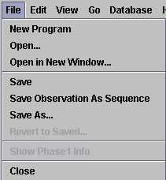
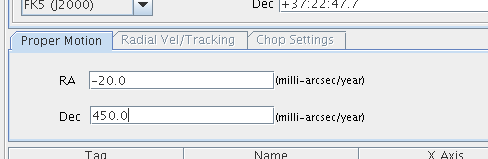
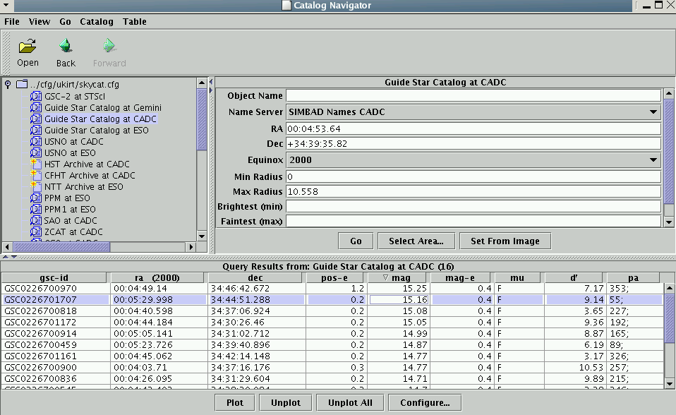
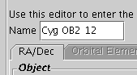
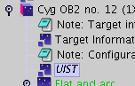
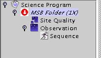

| UKIRT OBSERVING PREPARATION |

|
This document describes the preparation of UKIRT observations under the
UKIRT
Observing Tool. It assumes that you have already acquired
the software (see the
download page). Of
course if you are
using a JAC, UKIRT or JCMT machine, the software is already installed.
Email
ukirtot@jach.hawaii.edu
with questions or problems.
This guide is intended to be relatively complete without going
into the details of the science libraries on which most observing
is based. Those details can be found elsewhere (in the libraries
themselves
and on the instrument
web pages
(http://www.jach.hawaii.edu/UKIRT/instruments/). The
topics covered apply equally whether you are preparing observations
remotely
or at the Observatory. We suggest you read through sequentially,
following
the "tours" as they come up.
We strongly recommend that you use the online
version
of this document, stored on the UKIRT web pages (http://www.jach.hawaii.edu/software/ukirtot). If you are reading these
notes within the OT's own help
system,
please be aware that the web version may be more up to date, and that
external links will not be accessible. Also, the native java browser
is not as user-friendly as Netscape, Mozilla or Internet Explorer.
Finally - please be sure to read the list of known issues with the
current
release (you will find this at the end of the document).
I. Introduction
II. The Observing Tool
Startup screens
The science program
window [tour]
The
Template Library [tour]
Minimum
schedulable blocks
Science
Program Elements
Inheritance
Administrative
components: Scheduling and Site Quality Components, and Priorities
Scheduling
constraints
Site
quality constraints
Using
inheritance with administrative components
Priorities
Example
- a complete science program [tour]
Use of the Position Editor
[tour]
Large Programmes
IMPORTANT -
Program
Documentation
Observer notes - what NOT
to do
CHECKLIST - what to
look
for in a typical program
Estimates of execution time
Saving and Submitting
your
Program
Click-by-click worked example
III. Advanced Topics
and
Usage Notes
AND and OR Logic
Drag and Drop
Usage
through a firewall
Specifying
Spectroscopic Standard Stars
Guide stars and
acquisition scenarios
Links to Instrument-specific OT
guides
IV. Release-specific
notes
Known bugs
I.
Introduction
The central system in UKIRT Observing is a database of observations,
held at the summit of Mauna Kea. Observations are prepared
by the Principal Contact for each observing programme, using the
Observing Tool. The science program is stored on disk locally
(which can be anywhere in the world), and once complete, submitted into
the summit database. The observer at the summit uses
a database query tool to sort and extract observations to be done;
details of execution are instrument-specific and we do not discuss them
here. Once you are familiar with the information here, please consult
the instrument
pages on the UKIRT home page for information specific to the
instrument
required by your program. You will also need to get a password for your
database
area, from the Password
Server. Your program id is something like u/yys/n where "yys" identifies the semester (e.g.
07B) and n is the id number of
your telescope time proposal.
Note for queue-scheduled PIs (PATT): once your programme is saved into
the database and the semester is under way, the local file version
should be considered a backup only. This is because the repeat count on
MSBs within the programme in the database will change as observations
are done. If you resubmit the file copy into the database you will
overwrite that status information and it is possible that an
already-executed MSB will be re-done inadvertently. So the
recommendations are: (i) use a local file copy only for backup
purposes. (ii) if you want to make changes to your project once
the semester is under way, fetch it from the database, make your
changes, and resubmit. And (iii) preferably do so when it is not night
time in Hawaii. If you see a message referring to "file has changed on
disk" when using database...submit, it probably means that the summit
observers are active on your project and a count has changed since you
fetched the project from the database. In these circumstances it is
probably wise not to submit the changes for reasons already stated.
II. The
Observing
Tool
Startup screens
When you run the OT (under UNIX, type ukirtot
in an xterm) you will see a splash screen which gives authorship etc.;
dismiss this and you will be left with the OT main window:
When starting afresh, most of the useful actions reside under the
"file" menu.
File menu
Item
|
Function
|
New Program
|
Creates a new science program. This is the
first thing you'll do when starting from scratch.
|
New Library
|
Ignore this; it is for UKIRT staff use only.
|
Open
|
Read in a science program file stored locally
on disk. Initially, your science program will be stored locally; only
when it is complete and validated will you submit to the database.
|
Open...library
|
These entries pop open windows onto the UKIRT
libraries which store recommended sequences and standard stars.
|
The File Menus
A word of caution - both the File menus and
the
Database menus differ between the OT main window and the
Science
Program window. Here are the respective file menus:
OT
main window file menu
|
Science
Program file menu
|

|

|
So note that (sensibly, given the ability to have
more than one science program open at a time) the file menu which
contains "Save" and "Save as..." is the one on the Science Program
window. Similarly, the Database menu on the OT main window contains
only "Fetch", while the Database menu on the Science Program window
contains only "Store".
Tour: the Science Program window
Select
"New
Program" to create a new program. This produces a window like the
following (click
on the image for a description of the various component parts). The
main areas are
- the menu and general tool bars at the top
- the component tool bar down the lefthand side
- the program display panel in the middle
- the editor panel on the right
CLICK
THIS IMAGE TO TAKE THE TOUR
If you don't see exactly the above when creating a
science
program, look under the "View"
menu and alter the settings which
control
whether words, pictures or both are used to display the toolbars.
Initially, the only thing in your program panel is a
"Science
Program" line. You will add to the program later. For now, take the
time
to fill in its administrative details in the Science Program editor
panel on the right. The most important field here is the Project ID
field.
You have to get this right, or you will not be able to submit your
program to the summit database. Your project ID was assigned when
you submitted your proposal for telescope time. It is of the form u/yys/
followed by the proposal number (yys
indicate the semester - e.g. 07B). You can also find your proposal
number
in
our web page of time allocations. Finally, note that the program itself
calculates an estimate of the total time required and displays this in
the administration panel.
Tour: The UKIRT Template Libraries
While it is possible to build up observing sequences
from
scratch, we strongly recommend that you adapt one of the
many "library sequences" found in the UKIRT template libraries,
which are found on the main file menu. As an example, the UIST
template library window is shown below, with all the libraries in their
initial non-expanded state. Click on the image for a short tour of the
library contents:
CLICK
THIS IMAGE TO TAKE THE TOUR
Typically, setting up your UKIRT program involves
opening the appropriate library, finding within it a sequence which
matches your requirements, and copy/pasting or drag/dropping
it into your new science program; then you are in a position to alter
instrument configurations, target lists and to document the program for
the observer's benefit. Refer back to the
Science program window tour
for the locations of the cut, copy and paste buttons (or look at the
figure
above, where you'll see three buttons starting with the scissors). An
example
of a more complete science program is given below, but first we'll
introduce
some of the essential building blocks.
Minimum
Schedulable
Blocks
The basic quantum of observing, both in classical
and flexible scheduling (though more natural to think of in flexing),
is the "minimum schedulable block". This is the smallest part of the
program which is complete, fully-reducible and thus stands alone. In
most cases, an MSB will be executed at the telescope
in its entirety. For example, a target observation would be
incomplete
without suitable calibrations, and so one might define the smallest
spectroscopic
MSB as comprising the spectrum of a target, combined with sufficient
flats,
arcs and a standard star to be fully reducible. For efficiency, the
observing system at the summit allows the observer to skip calibrations
if not required
(e.g. if executing a number of similar MSBs which can share an existing
calibration). Note that the UKIRT template library contains MSBs, not
just
Observations, so you will naturally be building up from these.
You should aim to produce a science program
consisting
of suitably-titled MSBs. The title will appear in the query tool when
observing at the telescope, so try to make your titles
as descriptive as possible.
Science program elements
MSBs within your science program specify observing
conditions,
instrument configurations, telescope offset sequences and data
reduction recipes for all the observations you have been given time to
carry out. They do this through combinations of the following elements:
Program icon
|
Designated item
|

|
An "Observation" (e.g.
of a target or a standard star)
|

|
A "Component" -
in this case an Instrument component. These are used to "set scenes"
(in
the illustrated case, one or more instrument configurations which will
apply within an Observation).
|

|
A "Sequence" -
this
contains the actions undertaken in an Observation - for example,
offsetting the telescope and taking data at each offset point. If you
omit a Sequence, no amount of configuration components will cause
anything to actually
happen at the telescope.
|
|
An "Iterator" -
these
cause either the instrument, or the telescope, to loop through
a series of different configurations (in the case of the telescope,
the loop is through Offset positions). Everything inside the iterator
is repeated for each of its settings.
|

|
An "Observe" -
Each
Observe causes one data file to be produced. If there's no Observe in
your sequence, the telescope may well offset and the instrument may
well set to a configuration, but no data will result.
|
Note that you will not, normally, have to insert any of
the
above into your program manually, because you will start from the
library
sequences which incorporate all the commonly-used data acquisition
methods.
To read a science program you have to understand
its hierarchy. An example:
|
|
Here, everything is more indented than
the Science Program icon, therefore
everything
is part of the Science Program. By contrast, the two "dry
target" MSBs are at the same indent
level, so are independent of each other within the program. The
second MSB is not "expanded" - its
contents
are hidden pending a click on the lever to its left.
Within the first MSB, and hence indented
further,
is an Observation,which itself contains a
Target component, an Instrument component and a Sequence
(all three of these are at the same indent relative to the
Observation). The sequence in turn
contains an
offset iteratorwhich "contains" an Observe. Recall that the Sequence
is just a formality, indicating that everything within
it is executable. The Iterator, however,
is
a loop - everything within it (usually but not always this is just an Observe)is
done for every setting of the telescope offset iterator.
When executed at the telescope, this particular Observation sets the
instrument up, moves to a target, then takes data frames at each
position
of an offset pattern.
|
Inheritance
The observing tool allows MSBs to inherit properties
from the program environment they find themselves in. For example,
if a site quality component is present at the top of a science program
(as in the example above), then none of the MSBs within the program
need to have a site-quality component of their own; they inherit it
from this global one. Conversely, a site-quality component within an
MSB "trumps" such a global component. This also applies to Target
components;
a target given at the top of an MSB, outside the scope of Flat,
Standard
and Object Observations, will apply to all three (so when the flat/arc
observation
is run, the telescope will slew to your science target). This
may
or may not be what you intend; check the logic carefully (obviously in
this example you would also want to override the global target in the
standard-star
Observation).
Administrative:
Scheduling and Site Quality Components, Priorities
Scheduling constraints
The scheduling constraint component allows you to determine the
scheduling
of observing within your program by specifying both a range of dates
and elevation limits. Click the image below for more information on the
scheduling
component's editor panel.
 |
Note that most of the library MSBs do
not contain
scheduling constraints - this is because most programmes require the
same
constraints throughout. Therefore, once you have created a new program,
the
normal first step is to select a Scheduling Constraints component from
the
"Component" item on the left-hand toolbar. |
Site Quality
Four constraints relating to site quality can also be specified
by making the appropriate selections in the site quality component.
Click the image below for more information on the Site Quality
component's editor panel.
 |
Again, it is normal for the same site
quality
requirement to apply to all MSBs in a program, and so these components
are
not normally part of the library MSBs. The normal second step is
therefore
to insert one of these components into the top of the program (along
with
the scheduling constraints). This component is found under the
"Component"
list also.
PATT PIs beware: the Time Allocation Group may have assigned your
project a set of default observing conditions constraints. You will
have received notification of these constraints with your time
allocation. These are associated with your entire project in the OMP
database and will override any
more relaxed constraints you specify in your MSBs. Please ensure
that your site quality requests are consistent with those assigned by
the TAG. See the "allocations" page for details if you are unsure.
|
Using inheritance with the
administrative
components
As stated above, the majority of programs will require the same site
quality and scheduling settings for all MSBs. In those cases, the
inheritance mechanism avoids having to copy these components into every
MSB, but individual MSBs which require different conditions .

|
In this (schematic and incomplete) example,
the site quality component at the top applies to the three MSBs which
don't have their own; only "wet target" overrides this global
component.
To insert a Site Quality (or
Scheduling
Constraints) into a given MSB, expand the MSB and highlight its title
line
(as in the figure here), then select the required component from the
"Component"
list on the left hand toolbar in the Program window.
|
NOTE - Site Quality and Scheduling Constraints cannot be included in an
Observation within an MSB.
These components apply to MSBs, not Observations within MSBs. If you
break this rule, you will get a validation error.
Priority
Your project has been allocated a TAG priority which specifies its
overall importance in the queue. However you can control the priority
of individual MSBs within the programme by using the "Priority" number
in the MSB top level window:
Setting
priority on a given MSB.
Here the first MSB in the programme has been given just below medium
priority (55).
|

|
Note that if all your targets are up at the same time and all are
consistent with the prevailing conditions, the priority setting will
determine which is executed first. To automatically set priority on all
MSBs in your programme, use the "Auto Prioritize" facility.
Setting
priority on all MSBs:
Click the "Prioritize" button (top right of this image). This assigns a
priority between 1 and 99 to all MSBs in the programme, working from
the top down.
|

|
Tour: A more
complete
science program
The figure below shows a science program which is
fairly
straightforward and a reasonable approximation to what one might expect
to have to set up for either classical or flexible observing. There
are ways to give programs "Logic" (different combinations of MSBs,
etc.)
- these are discussed in "Advanced Topics" at the end of this document,
and your support scientist will be happy to help with questions in this
area. Most programs will not need to use this type of logic, and
supplying
a flat set of MSBs as in this example will be fine.
CLICK THIS IMAGE TO
TAKE THE TOUR
Moving Objects
Moving objects (excepting planets and other bodies which are accessible
in the pull down menu in the Target component) are accommodated via
orbital elements. The format of these elements is fairly specific. An
example is given in the figure below.
Comet Tempel-1:
orbital elements
Top:
Orbital elements as found, in
this example, on the
NASA JPL NEO orbit
diagrams page |

|
Bottom:
Elements specified in the
Target Component Elements tab.
Note the different format for Epoch and Time of Perihelion Passage, in
particular. |

|
|
|
The OT can use the Horizons database to resolve a given minor planet's
name into elements. An example is given below.
Name resolution for moving objects: When
"Orbital elements" is the selected Target Type, the "Resolve name"
button queries the Horizons database for elements.
Note that the name format is somewhat picky and you may have to use
trial and error to get something that works for a particular target.
Also note that the OT uses a resource at JPL which is intended for
human reading, not computer processing. As such the output format is
subject to arbitrary changes, so there is no guarantee that this search
feature will work or that the results are accurate; for example it is
possible that elements may end up in the wrong field or omitted
completely.
Always
double check the returned values.
|

|
Allowing for Proper Motion
Entries for the RA and Declination proper motion rates (in
milliarcseconds per year) can be made in your target component.
Proper
motion entered as milliarcseconds per year in the target
component. These values are taken into account when slewing the
telescope.
|

|
Tour: Using the Position Editor
The position editor is used to set up guide stars,
science
field orientations (slit angles etc.) and display catalogues of sources
in the field of your observations. It is started up either by clicking
the "plot" button in the target component page, or by clicking the
"image"
button on the main toolbar, as described in the
tour of the science program
window, above. Click on the image below to take a tour of the
position editor's facilities.
CLICK THIS IMAGE TO
TAKE THE TOUR
By default the position editor loads images from the
digitized
sky survey. However it can also load any FITS image with an appropriate
WCS, from the File menu; this has entries for either files on
disk, or URLs which point to fits files. If, for example, you want
to import a SCUBA map in NDF format, convert it to FITS by using the
starlink convert utility with the following arguments:
convert
ndf2fits encoding=FITS-IRAF bitpix=32 comp=D
Catalogues
The OT has access to a wide variety of stellar and nonstellar
catalogues, including the Guide
Star Catalogue, USNO, NED etc. These are all accessible under the
Position
Editor's "Catalog" menu, using item "Catalogs". Select your
required
catalogue (from the nearest accessible server) and the stars will be
plotted on the PE display. To browse the catalogue in text form, run
the Catalog...Browse function. The Browse window is shown below. If you
click on a star in the PE display, the selected star will be
highlighted in the table (as shown below).

|
The catalogue browser window.
Note that the column headings are "sort" buttons - here we have elected
to sort by magnitude.
|
Large Programmes
If your observing programme involves observations of a large number of
targets, you have two options. Either (i) clone a template MSB using a
text-file target list, or (ii) use survey containers to hold multiple
pointings in a single MSB or MSBs. Each of these options is described
below. For large surveys of contiguous areas of sky, you should use the
Survey definition tool (SDT) which is linked to at the top of this
document.
Cloning a
Program
from a Single MSB and a Catalogue in a Text File
If you have many sources which you wish to observe in a similar way and
do not wish to go through the rigmarole of creating a target component
for each one, there is a way to generate a science program from a
template MSB and a text (ASCII) catalog file. This uses a web service
at
the JAC
site - so you need an internet connection to do this.
Start with a science program which contains a template MSB with a
blank
target component (for example, a template MSB you have retrieved from
the UFTI library). Your catalog file should be of the format:
PKS0106 01 08 38.771 + 01 35 00.32 RJ
3C84 03 19 48.160 + 41 30 42.10 RJ
3C120 04 33 11.096 + 05 21 15.62 RJ
PKS0438 04 40 17.180 - 43 33 08.60 RJ
The catalog format is not blank space sensitive - if you have existing
catalogues compatible with the JCMT's sourceplot package, they
will
work as is, provided they do not contain planets or objects with
orbital elements.
Under the edit menu (in the Science Program window), there is an
option
called "Replicate from catalog". Choose this action and you will be
asked for the location of the catalog file. Once you have done this,
the OT will contact our site and after a short delay will pop up a new
science program window containing multiple MSBs. So if you had an MSB
with
one blank target component and a catalog file with 12 sources, you will
get back a science program with 12 MSBs, whose target components have
been filled in using the information from your catalog.
Of course you should tweak the MSBs further, such as giving them
more
informative titles, adding guide stars and tweaking the observation
parameters on each
source.
Survey Containers
Survey Containers allow you to include multiple pointings at the top
level of an MSB, such that the Observation within the container will be
done at each pointing in the container. These are generally recommended
for doing a group of pointings which lie in the same part of the sky -
e.g. four pointings to generate a complete WFCAM "tile". The containers
are present in the WFCAM template library "Survey" templates:

When an MSB like the above is fetched from the database at the summit,
it is expanded into N Observations, where N is the number of targets in
the Container. However the meaning of MSB remains the same: the whole
of the MSB must be doable for it to come up in the queue. Corollary: it
is a Bad Idea to include targets over a wide range of RA in one survey
container.
Here is what you see when you click on the Container itself:
To manually add and remove positions, use "Add" and "Remove" buttons at
the bottom of the panel. Here is a completed container:
Note the "Target Information" Tab. Each target has its own target info,
in a format identical to the familiar Target Component:
On the
Survey Targets tab,
there is a "load" button. This allows you, if you're not using the SDT
to populate your Container, to upload a set of targets from a text file
in the following format (slightly different from the format for MSB
cloning):
SURVEYID = Test
BASE BGPS3097 18:34:12.03 -08:22:57.3 FK5
GUIDE GD2 18:31:12.06 -07:59:05.2 FK5
BASE BGPS3100 18:34:19.16 -08:23:27.9 FK5
GUIDE GD2 18:31:12.06 -07:59:05.2 FK5
:
etc.
The first line is the Survey ID, which will become the title of the
survey container. This is prefixed to every supplied target name as
follows:
(so it is best to keep it short!).
Finally, note that there is a template MSB in the WFCAM template
library which uses a Survey Container to carry out a complete "tile"
(four WFCAM pointings). In this case, the diffferent pointings are
generated by using the "Offset" fields in the individual target tabs;
so the same base position should be entered into each tab if you use
this MSB.
IMPORTANT - Program
Documentation
There are two levels at which you must
document
your program's MSBs. These are (i) notes which the observer will see
and
(ii) internal notes which the support scientist will make use of when
vetting the program. The second type of note should be scattered
through
the program, identifying for your own benefit (and that of your support
astronomer)
why you have made particular selections of (e.g.) offset parameters or
library
sequence.
The first type of note is what you get by selecting "Show to the
Observer"
in the Note component. We do not expect (or allow) summit observers to
access your program in the OT to find out what you're trying to do;
instead, your MSBs, individually, can each contain one note (flagged as
"show to Observer") which will pop up on the QT screen at the summit.
These notes should clearly contain rather generic information about
the program as a whole, plus any specific items for this particular
MSB; the following table gives examples of the two types of information.
| Strategic |
This program does spectroscopy of both faint
and bright emission knots in galaxies, looking for good detections of
line strengths in emission. Standard ABBA jitters are used. It is more
important to this program that you get to all the targets, than ensure
detection of each of them. So, spend an hour on each target unless the
lines come in quickly (S/N of 10 would do); if nothing after 1
hour
don't waste any more of my allocated time, just move on to the next
source
(unless you believe there is evidence that my conditions constraints
are
too relaxed, in which case please let the support astronomer know). If
you do see a line, stay on it as long as is necessary (within reason)
to
get a good detection.
|
MSB-specific
|
I'm not sure how bright the lines in this
particular
target are, but there's a chance that the exposure time I've given is
too long. Please watch for saturation in the line peaks and reduce
exposure time if necessary.
|
You would place this Observer note in each of your MSBs, with only the
MSB-specific part changing from one to the next. Don't overload the
observer
with information - the above is reasonable.
When you click "show to observer" you are presented with four boxes in
which
we require you to place indications of your positional accuracy,
description
of your source's infrared appearance, brightness estimates (visual and
infrared)
and signal-to-noise requirements. This documentation has been a
requirement since Semester 03B; the aim is to ensure that
Observer
notes are of more uniform quality and detail - the above four items
were
considered particularly important for summit observers to know. Filling
these
boxes in accurately is a program-vetting checklist item.

|
A simple program note in the
note
editor panel. Show to Observer has been ticked and suitable entries
have
been made in the four resulting text fields.
If you have more than one "Show to Observer" note, the contents will be
concatenated
and all displayed at the summit. Since the observer will not have time
to
read long screeds of information during the course of observing, please
make
sure you do not overload them this way.
|
Observer notes - what
NOT to do
Here we list some common faults with observer notes. Please avoid these
if you can.
Instructions which aren't necessary
Please don't confuse the
observer by apparently issuing instructions in the observer notes which
are in fact implicit in what the MSB will do. For example: "Please
offset to nearby sky field for sky flats" is superfluous if that's what
the Observations in the MSB actually do. Instead, try something like
"The MSB will first offset the telescope to a nearby sky field and take
a sky flat jitter."
Concatenate incoherently
If you include "show to observer" notes in the global position at the
top of the project and also within MSBs, they will be concatenated and
the observer will, when fetching a given MSB, see both the global one
and the MSB-specific one. There is nothing fundamentally wrong with
this but please make sure that the notes (i) are at least consistent
with each other (ii) don't duplicate information (iii) are coherent
when concatenated.
CHECKLIST - What
to
look out for in a Typical Program
Within a typical MSB, you should be attempting to
ensure
that:
- The MSB's contents
represent a complete, calibratable observation of a science target.
In most cases this means that all MSBs must contain Observations of
a Standard Star, though these observations can be flagged as Optional
(as described previously) to allow the observer to skip them if they
are sure that a suitable standard already exists. Note that time
observing standards from your MSBs is charged to your
program, so it
makes sense to use this flag !
- The MSB is well-documented.
This means that you have used both informative notes within the details
of
the Observations, plus "Show to Observer" notes which will give the
observer
a summary of what you expect. The JAC will arrange a web page with some
typical data in your observing mode, but you should be as clear as
possible in the notes which pop up for observers what your expectations
are and whatever issues you foresee. Your support astronomer will
vet your program
as it enters the database, and will veto your observations if they are
insufficiently well-documented.
- Instrument components
are
consistent from observation to observation within the MSB (this
is usually, though not always, the intention). Note that for most
instruments,
the instrument component is global to the MSB (see "Inheritance") and
so does not need to be copied into each Observation.
- flats and arcs, if
present, have all had their settings set to the default for the
instrument configuration chosen (beware of making a small change, for
example altering a slit width, and finding that your flats are
overexposed).
- darks, if present,
have
had their settings set to the detault for the instrument configuration
chosen.
For example, a change in the estimated magnitude of an imaging standard
can change the exposure time and this must be reflected in the dark.
- target list components have
been set up, with guide stars in the case of faint objects
The best way to do this is to set up one MSB, adhering to the
guidelines
above, and use the validation button to check it. This will pick up
common faults like dark exposures being inconsistent. If you're still
uncertain, your support scientist is available to help with queries.
Then (depending on the details of your program) you may be able to just
copy/paste
the MSB and edit target and instrument components to generate the rest.
Estimates of Execution
Time
Your program builds up its total estimated elapsed time in stages.
 Observes
can be set to a number of repeats; generally this is one for
UKIRT instruments such as Michelle and UIST.
Observes
can be set to a number of repeats; generally this is one for
UKIRT instruments such as Michelle and UIST.
-
Repeat
iterators specify the number of times the Observes within
them are carried out.
-
Observations
show you the estimated time of the sequence they contain.
 MSBs give
you the estimated time of the Observations they contain
- in this case the science observation plus any calibrations
observation.
To be clear: this is the estimated time of that single MSB.
MSBs give
you the estimated time of the Observations they contain
- in this case the science observation plus any calibrations
observation.
To be clear: this is the estimated time of that single MSB.
-
Science
Programs give you the estimated time of all MSBs they contain,
including the number of repeats. So if you have a 1hr MSB and you
set the MSB counter to 2, your MSB estimated time will be 1hr and your
Science Program time will show 2hrs.
NOTE: while these estimates are quite accurate (to within 10%) in most
cases,
there are circumstances in which they can fail to represent the time
taken
to execute your MSBs. Example include programmes with large offsets
(the
crosshead takes a finite length of time to reach its guide star). It is
not
possible to take every such vagary into account in the time estimation.
In
the example quoted, the overhead of a sky nod could be brought down to
roughly
zero by ensuring that the guide star could not be reached in the sky
position,
but the OT cannot be expected to know what guide stars can be reached
and
which cannot. You should check your programme's quoted timing for
obvious
anomalies and contact your support astronomer if you find any.
Experience
shows that accessing your flexed data early and looking at elapsed and
on-source
times can show up efficiency faults at the 5-10% level. Since this can
cost
you an MSB or two at the end of your programme, you should make every
effort
to make such comparisons as early as possible in the semester, once
data
start to appear.
Saving and
Submitting
your Program
On completion of the program (and in general it's
also wise to do this as you go along), click
file...save
in the program window, and save the program to a local xml file (name
it
<whatever>.xml ; note that if you want the .xml suffix
then you have to type it). From this version on, the system will
automatically
save a
<whatever.xml.BAK>
backup
file which is the program as it was at the time of the last successful
save.
To store to the summit database, click
database...store on the
program window and enter your project password, which you can obtain
from the
UKIRT
password server. Once in the database, your support scientist will
vet the program, using a
checklist
which covers the issues above.
Tip: while editing your science
program,
its title is displayed in italics, but it switches to normal font upon
saving. When you edit any component of your Science Program its title
changes font to indicate that you need to save your work.
Click-by-click worked
example
The above gives a basic idea of the OT's capabilities and how to use
them.
Here is a click-by-click example of the creation of a simple MSB.
Further,
and better, examples are available in the instrument-specific web
pages.
The following covers the case of production of a UIST spectroscopy MSB.
Action
|
Menus,
clicks etc.
|
Image
|
Comment
|
Create
a blank science program
|
Main File...New
|

|
|
Open
the appropriate library
|
Main File...<library>
|

|
|
Insert
and fill in Site Quality component
|
From the left tool bar in the
science
program window
|

|
This is the pull-down menu
under
the "component" button
|
Insert
and fill in (if necessary) Scheduling constraints component
|
From the same components
list.
|

|
The science program panel
after
insering the two admin components
|
Find
a library MSB which matches your needs
|
|

|
We're doing a point source
observation.
|
Copy
and Paste into the program area
|
Highlight the appropriate MSB
by
clicking on it once. Then click "copy", move to the main program,
highlight
the item after which you want it to appear, and click "paste"
|

|
Alternatively, drag and drop
-
see the "Advanced Topics and Usage notes" in the main document
|
Fill
in the administrative details in the main program window
|
Click on "Science Program"
and
use the editor panel which appears on the right
|

|
The title entered will be
reflected
at the top of the program display panel also. See the next step.
|
Give
the first MSB a name
|
Highlight the MSB and type
into
the MSB editor text field.
|

|
The title entered replaces
the
MSB name given in the library.
|
Open
the MSB up and enter target details
|
Highlight the global target
component
- close to the top of the MSB, then use the editor panel on the right
|

|
You can use name resolution after typing in the target name
here.
Beware of this in the case of extragalactic objects, where there can be
big
differences between, e.g. Radio and optical positions.
|
Set
the
instrument configuration
|
Highlight the global
instrument
component - usually second item in the library MSB
|

|
All UKIRT instruments have
source
brightness fields from which suitable settings are derived.
|
Default
the flat and arc settings
|
Highlight the flat component,
and
click "Use defaults" in the editor pane. Then do the same for the Arc.
|

|
This is a
spectroscopy-specific
example but similar operations are necessary for short-wave imaging
(setting
the DARK exposure time).
|
Enter
standard star name and resolve it
|
Highlight the standard star
target
info and enter the name, then resolve.
|

|
Note that since semester 03B,
name
resolution no longer replaces the name you entered with the Simbad name.
|
Set
a
suitable imaging-acquisition exposure time
|
Highlight the acquisition
eye,
then follow the instructions in the NOTE just above it.
|

|
This is a UIST
spectroscopy-specific
operation which does not apply to other observing modes or instruments.
|
Ensure
that the Standard Star exposure time is correctly set
|
Highlight the UIST iterator
in
the sequence and select the target magnitude.
|

|
This is an iterator. It's
needed
because the UIST component is global to the MSB but the Standard will
(usually)
be brighter than the target.
|
Set
the
acquisition exposure time for the science target
|
As two steps above but in the
Target
Observation rather than the Standard Star Observation.
|
|
|
Check
that the science target offsets are correct.
|
|

|
The default settings move the
target
by integral number of detector rows but may be too small for extended
targets.
|
|
|
|
|
SUMMARY
At this point the program is broadly ready to go, though if you click
the
Validation button you will find that you have forgotten to include a
"Show
to Observer" note, and that guide stars remain to be set up.
Once those are done, you are ready to either clone the MSB into a
complete
program, or copy it and edit new targets in manually, or whatever else
your
programme demands.
|

|
III.
Advanced
Topics and Usage Notes
Here we outline some facilities which are either
more advanced
than a typical program is likely to require, or more than the beginner
user might expect to use.
AND and OR logic
Most programs will be catered for by simply creating
a
set of MSBs and at most specifying their relative priorities and
perhaps
some scheduling information. However, more complex programs can be
built up using the logic provided by "AND" and "OR" folders. The basic
function of these folders is as follows:

|
Allows you to select one or more (default is
one) MSBs from a list. If the default is used, then once an MSB from
the folder has been done, the rest are marked as unavailable.
|

|
Allows you to simply group MSBs together. In
general, ANDs make most sense when contained within an OR folder,
allowing
you to have two completely separate programs (potentially with many
MSBs each), only one of which gets done. For example, you may have a
set of
targets in two separate star-forming regions, don't need data in both
but
do need one region to be completed. ANDs inside an OR is the way to do
this.
|
An example of the use of these folders:

|
Here, for the sake of illustration, a PI has
managed to convince the TAG that there is merit in granting time to two
rather different projects under the same banner. The resulting science
program contains two OR folders. These do not interact with one
another; completing the first OR doesn't mean that the second OR (which
is at
the same indent level) does not get done. All being well, the PI will
obtain data on both sub-projects; the details of what they get is
catered
for by the AND and OR logic.
Within the (simpler) second OR folder,
the PI has asked for two out of three MSBs to be done. Depending on the
timing, these could be Oph-elias 29 and Oph-BK44, or some other pair
from the three. The important point is that once two are done, the
third
is marked as unavailable. Selection of the number to do is done in the
OR folder's window.
Within the first OR folder, the PI
has
required only one of three things to happen: either (i) the single MSB
on NGC4594 knot 3, or (ii) one of the two programs on knots in NGC4565
or
NGC4321. So the minute an MSB from the NGC4565 program is done, both
the
NGC4594 single MSB and the NGC4321 program is marked as invalid.
|
Formally:
ANDs were designed specifically to go inside ORs (to allow you to group
MSBs)
but are also available to group MSBs in general (to allow them to share
instrument
configs etc).
| Folder type |
Can contain |
| |
ANDs, MSBs, Observations or general components (inheritance
works
in an OR folder) |
| |
Anything except an OR or AND |
Drag and drop
Components, observations and entire MSBs can be
dragged
from place to place, though many users will find the cut and paste
described above quite usable. Drag and drop works in much the same way
as it does in most graphical user interfaces, but note the following
points
of protocol:
- press ctrl during
(after commencing) a drag and the move becomes a copy.
Note again that the key press has to happen after you
commence dragging the object.
- click on one object, then hold down shift and click on a second; everything
between
the first and second inclusive become selected.
What happens when you drop a dragged item is
indicated
by an arrow symbol:

|
Dropping a dragged item (for example, a
target
component) with the arrow pointing diagonally means that it is dropped
at one indent level higher than, and therefore becomes a part of, the
highlighted item (in this case, the MSB).
|

|
Dropping a dragged item (for example, an
Observation)
with the arrow pointing vertically down means that it is inserted into
the science program at the same indent level as the highlighted item
(in this case, the MSB).
|
You can control which of the symbols you get by
horizontal
movements of the dragging cursor; in the above example, you would find
that the symbol changed as the cursor was dragged past the "B" in "MSB
Folder (1X)".
Usage through a firewall
If your Institution connects to the internet via a firewall, you may
find
that connections to catalogue servers etc. fail. If this is the case,
then
you can specify your proxy server and port number on the OT preferences
window
(accessed via the File menu). For a networked installation, you can
edit
the file ot.cfg and supply the server and port on the lines supplied
towards
the end of that file.
Specifying
Spectroscopic
Standard Stars
If your programme is spectroscopic, and you wish to specify
standard
stars yourself rather than leaving the choice to the summit observer,
we
suggest the following rules as a way to guarantee a reasonable airmass
match
to your target observations:
- Determine an RA appropriate for the mid-point of your
observations
by subtracting half the target observation time from
your target RA. e.g. If your target has RA of 12 34 56 and your
total observation time on target is 40 minutes, then your standard
should have RA ~ 12h 15m.
- Look for a standard with the RA calculated as above and a similar
Declination
to your target, using either the UKIRT
Standard
star lists, the Standard star library in the OT, or the Gemini
Standard star finder. Try to get as close as possible but at least
within
about 10 minutes in time for the RA and 10 degrees for the
Declination.
F stars are preferable to G or A as A have strong hydrogen lines and G
may have molecular bands. A types are preferable to G if there
are no
suitable F stars.
Guide
stars
and acquisition scenarios
Your guide star may be chosen from plate material
which
is many years old, and even if more recent it may have surprisingly
poor positional accuracy (Guide Star Catalogue sources for instance can
have systematic errors of up to two arcseconds depending on their
location). In these cases, the details of how you centre on your source
and guide
star can be important depending on your mode of observing,
slit width etc.
Guide-star brightness
(Cassegrain)
Off-axis, UKIRT can guide down to 18th magnitude (moon and cloud
dependent). the UKIRT guide camera operates effectively in the R band.
Rule
of thumb: if your guide star clearly illuminates 9 pixels in the
position-editor DSS image with default cut levels, then it will
probably be guidable (this is clearly colour-dependent so this cannot
be guaranteed). If your guide star has a hint of diffraction spikes in
the DSS image then it is about 14th magnitude and will be easiy
guidable - it will also appear in the Guide Star Catalogue (in the
Position editor: Catalog...Catalogs,
followed by Catalog...Browse).
Note that for reasons of thermal hygiene, we currently use a gold
reflective patch in the centre of the field of view; this is larger
than the UIST detector FOV and vignettes approximately 2.5 magnitudes
of guide star signal. So if you need to use a guide star close to the
science field, please ensure that it is brighter than (say) 15.5
magnitudes in the R band.
Guide-star brightness (WFCAM)
WFCAM's guider functions well down to 16th magnitude but much below
that requires unhealthily low guide frequencies and image quality
suffers. We suggest sticking to R magnitudes (again, the guide camera
works in an approximation to the R band) of 16th or brighter.
CGS4
We have a set of recommended methods; CGS4-specific
details
are given
here, and a more general flowchart for acquisition modes is given
here (the
latter
two links are available only through the online version of this page,
referred
to at the top of the document). You should identify in an observation
Note
which of the scenarios identified in the flowchart applies.
For example, if you are observing with CGS4, and
neither your guide star nor your target have accurate positions,
but the relative offset between them is accurate, then you should
identify
"S15" as the acquisition scenario (in
all
cases you should assume that the aperture position is known or has been
recently determined).
For UIST, acquisition is via the imaging mode and
peakup
is not in general necessary.
General
To help centring guide stars, the pick object option under Catalogs in the position editor is
useful compared
to positioning the cursor over the star and clicking. In general, stars
selected
this way come up relatively well centered and require little adjustment
of
the crosshead or telescope. This speeds observing still further and is
particularly
helpful for blind pointing to objects with good coordinates.
IRPOL
Polarimetry users should also be aware that the
waveplate
holder blocks much of the available field of view for off-axis guide
stars, as described in the
IRPOL
user manual.
Instrument-Specific Pages
Some of the UKIRT instrument pages have instrument-specific notes on
preparation using the OT. These are linked to below for reference.
Please note that there is other information on instrument usage in the
individual instrument documents, which you are expected to have read
before preparing your observations.
IV. Release-Specific Notes
Updates in the
January 2009 (09A WFCAM) version
Updates in June
2008 (08A Cassegrain block) version
- Additional changes to the UIST configuration files for thermal
imaging with the new controller
- Revised offsets for nod8 (1024 array)
- Revised default exposure times documented in the thermal imaging
notes
- FLIP recipes in the WFCAM library and DR component
Updates in November
2007 version
Updates include
- New standards for Y band (UFTI & UIST)
- Corrected display of IRPOL orientation in the position editor
- In the UIST spectroscopy template library, slides in the offset
iterator for point source spectroscopy now move the source into the
upper half of the array, where the array sensitivity (QE) is slightly
higher.
Updates in April 2006
version
Updates include
- Assorted fixes to Science Program Validation.
- CGS4 and UIST slit position angles are rounded to a single
decimal place.
- It is no longer possible to accidently put sequences before
components causing invalid XML to be produced.
- Copying survey containers get properly cloned.
- Changes to the X-offsets of RA get applied as [ X-offset x cos(
Dec )
]
- When targetting, the RA and Dec no longer get corrupted causing
drift.
- Initial removal of ODB and OM code.
- Removal of SERVER options on the command line as part of ODB code
removal.
- XML Science Programs can now be opened from the command-line.
- When opening files locally, the default working directory is the
directory the user is in when the OT started.
- Removal of OMP as an option as it is now the default, as a result
the OT no longer supports SGML.
Updates in 05A version
The 05A version of the OT was released at the beginning of February,
and caters specifically for WFCAM proposals. All other 05A projects can
continue to use the 04A OT unless they wish to take advantage of new
(non-WFCAM) features.
NOTE - these updates will migrate to the main document or to the
relevant instrument page over time. Headers will be left here.
WFCAM-specific updates
- WFCAM components have been added. This includes a WFCAM
instrument component, and WFCAM calibration eye, microstep iterators
and DR recipe components.
- Survey container added. This allows you to specify multiple
targets in a single container. This component also allows you to
elect to only observe some number from the list of targets. While
it is primarily for use with the Survey Definition Tool, it can also be
used on its own. It can either be placed at the top level of a science
program similar to an MSB), in which case it can contain at most
1 MSB (acting as an MSB iterator); or it can be placed inside an MSB
and can contain any number of observations (acting as a target
iterator).
- The target component now allows you to create "named
skies". That is, at the bottom of the target component
where you used to be able to select "GUIDE", you can now also add "SKY"
and/or "SKY_GUIDE". The sky position can input as either an
absolute value, or as an offset from the base. If you don't
want to use it, don't - in which case you can treat sky "eyes" just as
you used to. However, using them does allow some additional
functionality (described below). Each sky position specified will
be called SKYn, where n is an integer starting at 0. Similarly there is
a SKY_GUIDE which will allow you to guide on a patch of sky.
Again, this is primarily useful for survey work.
- The sky "eye" has changed to support the named skys. If you
don't specify a named sky in the target, this will have exactly the
same behaviour as the old sky eye, though it will look different.
If you do specify a named sky, the GUI allows you to select which sky
you want to observe. Depending on how you defined the sky, its
behaviour is somewhat different. If you specify an absolute sky
position, you will always go to that position. If you specify it
as an offset, then the three checkboxes on the user interface come into
play. These give you the following options:
a) No offset - you will always go to
the offset position relative to the BASE target
b) Follow offset - if your target is
inside an offset iterator, the sky position be offset relative to the
BASE offset, scaled by a user defined amount. So for example if
you had an offset iterator with two component (0.0, 0.0) and (0.0,
20.0) and your sky had an offset of (0.0, 60.0), then the sky positions
observed would be at (0.0, 60.0) and (0.0, 80.0) with a scaling factor
of 1.0, or ( 0.0, 60.0) and (0.0, 70.0) for a scaling factor of 0.5)
c) Random offset -
the sky offset will be at some random position centered on the defined
sky offset relative to the BASE, and with a box defined by box size.
General updates
- MSB's marked as REMOVED can now be UNREMOVED and their count is
maintained.
- On the site quality component, a better explanation of the cloud
and moon constraints is given, and a new constraint, J-Band sky
brightness, is added.
- The 150 l/mm disperser has been removed from CGS4
- The chop settings tab on the target component has been disabled.
- Validation now uses an XML schema. There may be some
side-effects of this change which we have yet to uncover, and user
feedback will be appreciated. Since this is a web service any changes
will not require a new OT release.
- More than 1 observer note can now be specified (but they can not
be put inside a sequence). At the summit, these notes are concatenated.
- Offset positions are now displayed around the position of the
guide star as well as around the target. This helps when deciding
whether a guide star will fall into an inaccessible area Guide
star offsets are displayed in blue. Highlight the offset iterator to
display these offsets.
Updates in 04A version
- Time estimates now report both total time and time without
calibrations (estimated time)
- Improved schema validation for both telescopes. Validation is now
performed against the TOML schema over the web (Note:
Failure of validation does not indicate that submission will fail).
Note that to validate against the most recent criteria requires you to
have a working network connection.
- Improved layout on various components - now requires at least
Java version 1.4.1
- On start-up, we now check to ensure that the correct version of
Java is being used
- On submission and retrieval to/from the database, pressing
'enter' after the password now behaves the same as pressing the
"Commit" button.
Known Bugs
Preference
settings
|
Bug:
File...Preference setting
for
prompt-on-close is not effective. Closing an altered science program
window from its file menu always results in a prompt for whether you
intend to do this.
|
OT
Help system
|
Bug:
Scrolling in the OT bundled
help
system may be intermittently broken. We recommend using the
online (web) guide rather than the bundled help.
|
Position
editor
|
Bug:
Occasionally fails to pick up
the correct position when plotting a target. This results in a "base
position is out of view" message on the position editor screen and
either a blank field or an image from cache.
Work
around:
This can be worked around
by closing the position editor, switching to another target component
and back again, and relaunching the editor.
|
Variable name too long on startup
Added
Jan-2006
|
Bug:
You get the following error message: set: Variable name too long
when starting up on a Solaris machine.
Workaround:
change the top line of the ot script (usually /somewhere/ompot/bin/ot)
from
#!/bin/csh -f
to
#!/bin/tcsh -f
(note that this assumes you have tcsh
installed).
|
TOML messages in validation
Added
June 2008
|
Bug:
Additional schema validation errors (roughly 11 lines long when
validating an entire programme; these errors are not present when
validating MSB by MSB.
Workaround:
These errors can generally be ignored. To be sure, try validating
individual MSBs.
|